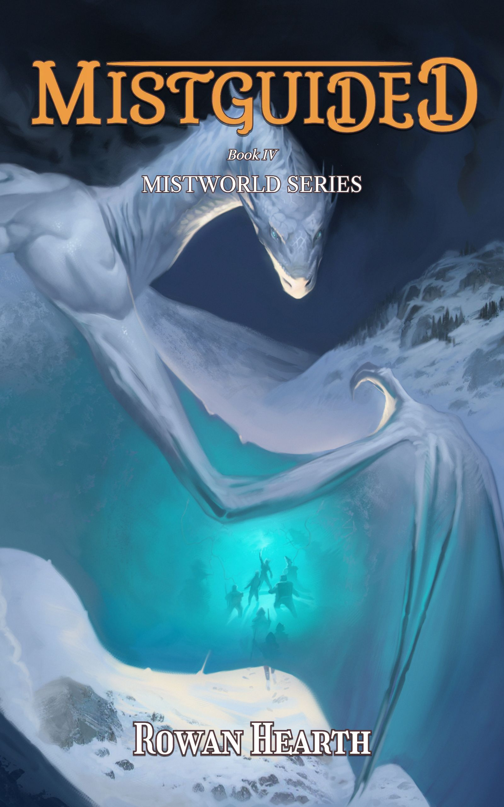

 |
Book 4 of the Mistworld Series When you've lost your spark, how do you keep moving? For Maeryn, the answer is hard: try to light a new one. No matter how long it takes. The loss of her fire magic has left Maeryn feeling more lost and uncertain than ever. But the Mad Prince is still out there, and there's no time to waste. They still need an edge against the Undead Legions, and mana is still depleting despite all efforts. Luckily, there's an answer for both: the homeland of the drow, the original masters of holy magic, should have a mana well unguarded by the Legions... if Maeryn can reach it beyond the Glacial Expanse. But neither knowledge nor power is so easily revealed, least of all by those who resent how history unfolded. To learn the way forward, Maeryn must first reconcile with what lies behind her... and behind the Mad Prince. The only guidance to be found lies deep within the Mist. |